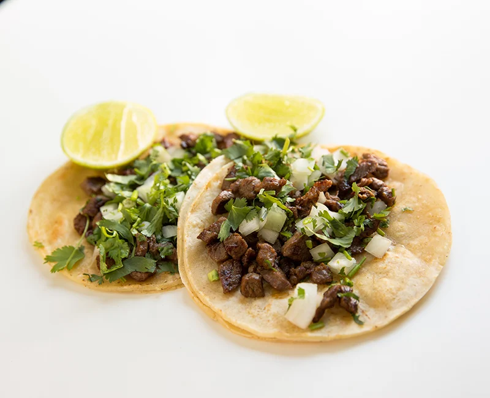

Taco Recipe

A taco is a traditional Mexican dish consisting of a small hand-sized corn or wheat tortilla topped with a filling.
The tortilla is then folded around the filling and eaten by hand. A taco can be made with a variety of fillings, including beef,
pork, chicken, seafood, beans, vegetables, and cheese, allowing for great versatility and variety.
They are often garnished with various condiments, such as salsa, guacamole, or sour cream, and vegetables, such as lettuce,
onion, tomatoes, and chiles. Tacos are a common form of antojitos, or Mexican street food, which have spread around the world.
Ingredients
- Corn Tortilla
- Carne Asada
- Cilantro
- Onion
- Lime
Steps
- Make the carne asada.
- Prepare the toppings.
- Assemble the tacos.